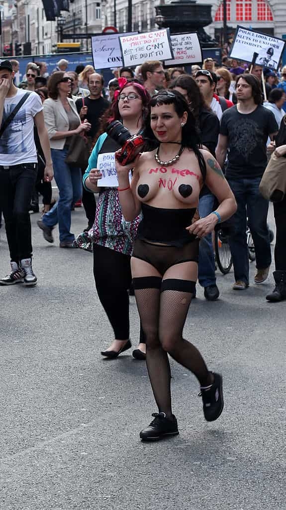

< < < Back
Science Proves Women Use The Word “Slut” As Much As Men – Return Of Kings
In news that flew under the radar last year for obvious reasons, UK think tank Demos found that women slut-shame and use the word “rape” to offend as much as men. Thus, science confirms what you already knew: women use the word “slut” pejoratively and embrace additional epithets against other women without ever being held accountable for it.
Far from a tiny sample, the study analyzed many tens of thousands of tweets containing the words “rape”, “slut,” and “whore.” The findings motivate us to ask why, even if we accept the farcically low modern threshold for being called a misogynist, men are called out for “woman-hating” many times more than women.
This study, others like it, and our anecdotal experiences confirm that women fit the bill of “misogyny” in as many cases as men.
What does this say about SlutWalk?
SlutWalk, aimed at vilifying men, is therefore a sham because it blames men for “misogynistic” attitudes expressed just as much by women. If feminists acknowledged this, which they never will openly, they’d be forced to concede that just as many women as men are misogynists under their very own definitions. But that would be bad.
After all, only disgusting, sexist men are ever guilty of working intuitively against the interests of women. Women are inveterate victims.
A big kudos must go to Time, and others, for publishing the findings last year. Whilst there are still significant and persisting coverage gaps, the publication has drastically improved its impartiality in recent years, airing several contrarian, red pill-like views on campus rape myths, the gender wage “gap” and in this situation slut-shaming.
I will not pretend that the Time piece did not meander towards political correctness and backtrack to avoid being attacked by SJW’s, but it’s a start.
This is the most common context in which a woman will be called a slut. So why aren’t there specific High School or Sorority SlutWalks?
As red-pillers, we are used to pillorying the media. It is important to recognize those elements where some truth comes out, and then seize that truth. We won’t get many opportunities for this.
Out of interest, did Jezebel cover this gender symmetry in slut-shaming story? Or Jessica Valenti? Or anyone from the isolated-from-reality tribe of feminist pharisees? “Slut” has historically been such an amorphous concept, unexplored by scientific inquiry. And now that we have more proof of how it is actually used on a gender-to-gender basis, feminists are silent. I wonder why.
That poor police officer
For those of you not in the loop (completely understandable), SlutWalk claims its origins from comments made by a Toronto police officer, Michael Sanguinetti. His name is already in the public domain, invariably to attack him, so mentioning him here is to counter that highly selective and unjustified criticism—unjustified in the sense that he verbalized opinions held and uttered by a substantial number of women.
Sanguinetti advised college students not to dress as “sluts” to avoid being victimized. Rare words from a public or municipal official, granted, but absolutely on the low end of the spectrum compared to what you and I hear on the streets.
The most likely bullying a woman will receive, including slut-shaming, is from other women.
When I go to clubs, fully 80% of the instances where “slut” is said come from women, usually to slag a fellow female rival. Girls will have drunken sex with a guy and tell us about their regret, only for other women to say, “Well, she brought it on herself.”
When a woman claims to have been sexually assaulted, again, other women are the first to use the s-word behind her back if they don’t believe her. Sometimes they even do believe her, or don’t dispute the principal facts. But the s-word is again flopped out.
How can women “reclaim” a word they already use incessantly?
The biggest existential and logical threat to feminism is the ignorance of equivalent female behavior. Only men are held accountable. When men use the s-word, it’s obviously, according to feminists, male privilege, patriarchy, and the affirmation of sexual violence against women.
Female use of “slut,” on the other hand, is dismissed as the result of patriarchal brainwashing, if it’s conceded at all. Women are conditioned to behave that way. Remember, they’re victims. That’s why they use the word, we swear! Because of this, most of the time the paradox is never even mentioned. Never even mentioned.
If approximately 50% of people using the word are female, it’s even worse. Surely women are best placed to understand. Because a man is rarely called a slut, he has much more of an “ignorance excuse” to use it. He doesn’t know the “pain” of the word first-hand, as feminists would put it.

I don’t see this creature confronting women using the word “slut.”
When 50% of people using this female-oriented word are women, it’s equivalent to 95% being women if the term were gender-neutral. Women know the import of the word more than men, repeat our feminist friends ad nauseam… yet they use it just as much. Get your misogynistic, ROK-reading minds around that one.
Women own the term “slut.” You hear it from female lips at every high school, in every nightclub corner, and daily on the open street. And when you use it, you must take responsibility for it.
That’s a far cry from the inverted SlutWalk world where “slut” is only heard from men’s mouths.
Read More: Women Are Responsible For Slut Shaming